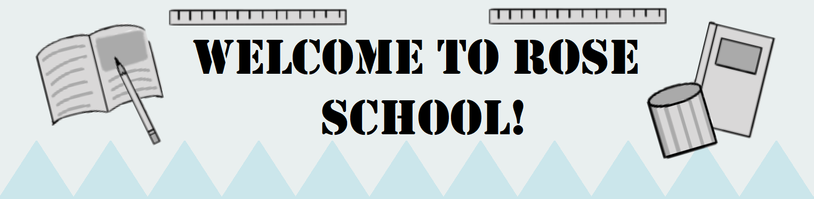

.
Welcome to Rose School, our very own special paper educational center,
in which it is guaranteed that no teachers will kill you like in the
already known Paper School . Our facility contains everything our
students need for a good education and also to learn everything they need. Our School teaches subjects like: Math, Language, Science, History, Geography and more .
Our facility also contains different classrooms and variety so our students
don't get bored by all different subjects and so they can also have
some rest, we got places like a pool, a gim, a garden and more places in which
our students can enjoy some free time between subjects.
.
Our school is one of the only two Schools that are located in our paper world, we started teaching a year after Paper School opened its doors to public. Since the first day in which we started teaching, we have been called the 'Rival School' due to being the second school as many people may think that we want to rival with the success of the Paper School, though we are not in a rivalry against Paper School.
We want to also declare that we aren't making any rivalries between students from our schools, as we have heard that many parents think our school teaches our students to be bad or aggressive towards the kids from Paper School, we want to say that we don't make any of those rivalries happen, and most of them take place outside our facility, we also are highly trying to talk with troublemakers from our school to calm down the situation. We also want to say that we prepare some special activities with Paper School, letting the students from both schools socialize, we think that with that, things between both schools will get better.
We also want to adress some rumors, many people who said to have studied in our school, talk about different dissapareances, injuries or death. They all talk about an entity named DANIEL , which is called as that to mean: Dangerous, Aggressive, Negative, Inmortal, Enigmatic and Lurking. We want to say that this 'Daniel' is just a myth from our school, as there haven't been any proven ideas of that thing actually existing, we may think that it may be kids having traumatic experiences about something and thinking this creature is real, though, we thought that it may be other people who just make-up these little things to scare the kids and drag bad attention to us, but we want to assure you, our school is safe for all, including students and teachers.
For legal issues, parents will need to sign a legal disclamer releasing us from all liability that may happen to their kids while they stay in our school , but as we said before, our school is safe and we highly doubt that any of those things will actually happen.
In our school there are some teachers that really help us with the work, they aren't many, as most of the teachers work at Paper School, but that hasn't stopped us from getting help from these amazing teachers that help our students everyday.
- Mister Smith: Math Teacher.
- Miss Moon: Language Teacher.
- Miss White: Science Teacher.
- Mister Scott: Art Teacher.
- Mister Miller: Tecnology Teacher.
- Miss Hunt: Music Teacher.
| Student |
Age |
Grade |
Speciality |
| Mike |
21 |
F |
Mike is one of the most known students of the school, mostly because of how much trouble he means, he is the leader of the bully group. He means danger, that's why we recomend staying alert around him. We also think he has a secret room with dangerous weapons, yet we haven't found it yet, despite his grades, Mike is also very intelligent, so be careful. |
| Mark |
17 |
A+ |
Mark is known for being a bully but somehow getting really good grades, he is a good friend with Mike and he usually tends to bite, we recommend staying some feet away from him, if you don't want to loose a limb cause of his cannibal actitude. |
| Mia |
19 |
B- |
Mia is another bully, but not so rough as Mike and Mark, though she can be really annoying, we mostly recommend that students look around themselves, she usually try to hit other with pencils or paper planes. |
| Parker |
16 |
B |
Parker is known for being a really kind, yet shy boy, you should try a slow approach, he sometimes gets really nervous but he isn't bad, he just needs some friends to spend time with! |
| Sarah |
17 |
C+ |
Sarah may be one of the only who believes in the already mentioned myth of 'Daniel' she is talking everyday about it, which we think it has led her into insanity, her looks really talk say a lot about her, we are trying to make her go back to sanity again, but there's no actual way. |
| Terry |
16 |
A+ |
Terry is a really friendly AI created to not only attend classes and learn, but to help everyone around, he is always giving some help and trying to do his best around all school, you should meet him, he will surely have an interesting fact or something to impress you! |
| Sofia |
16 |
A |
Sofia is a kind and introverted girl, always ready for adventure! She will surely give you some amazing time when you're with her, maybe telling stories or showing you different things to do. |
| Nolan |
17 |
A+ |
Nolan is the son of the most rich persons in the Paper world, so please, treat him with respect, we have pro-claimed him a king of school, you will see him always wearing that paper crown to show his territory. |
| Frisk |
16 |
C |
Frisk is really different from others, he may be 16, but acts like he had 6! He eats a lot and is very funny to watch, we are sure he will give you a funny time, maybe eating bricks or just doing some random things that many would think are not normal. |
| Luca |
16 |
B+ |
Luca is the funniest boy in the school! With lots of funny jokes to lighten up a day, he also loves candy, and has a collection of lots of candy! He also has many funny things like rollerblades, water guns and he even has a clown horn! He really can make you laugh a lot! |
| Luna |
16 |
B+ |
Luna is our emo girl! You may notice because of her dark and kind of sppoky looks, but in the end, she is Luca's sister, making them a funny duo to see. Their interactions may drag your attention, after all, we got a funny boy with a serious girl, imagine the possibilities! |
Click on any image to know more about different things!


Paper school Video--------------------------------------------Paper School wiki
End of the page